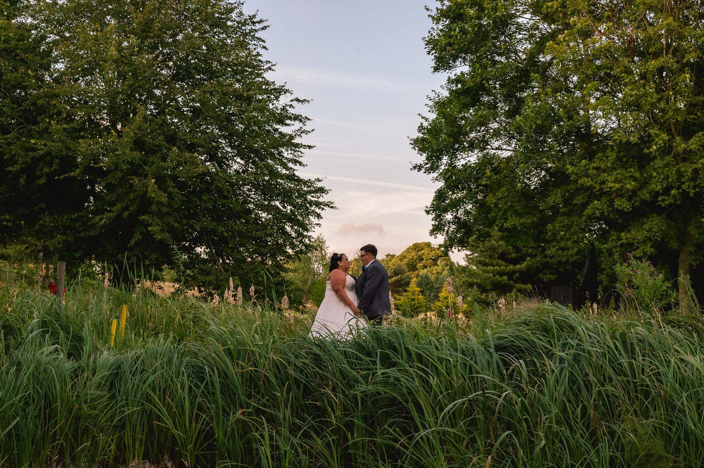
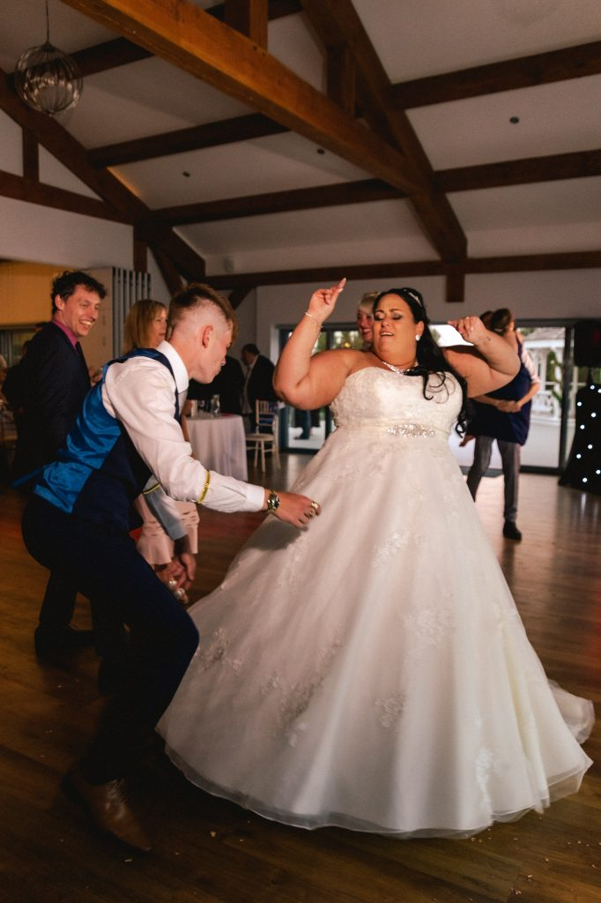
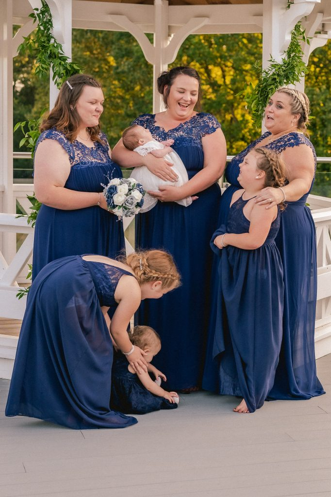
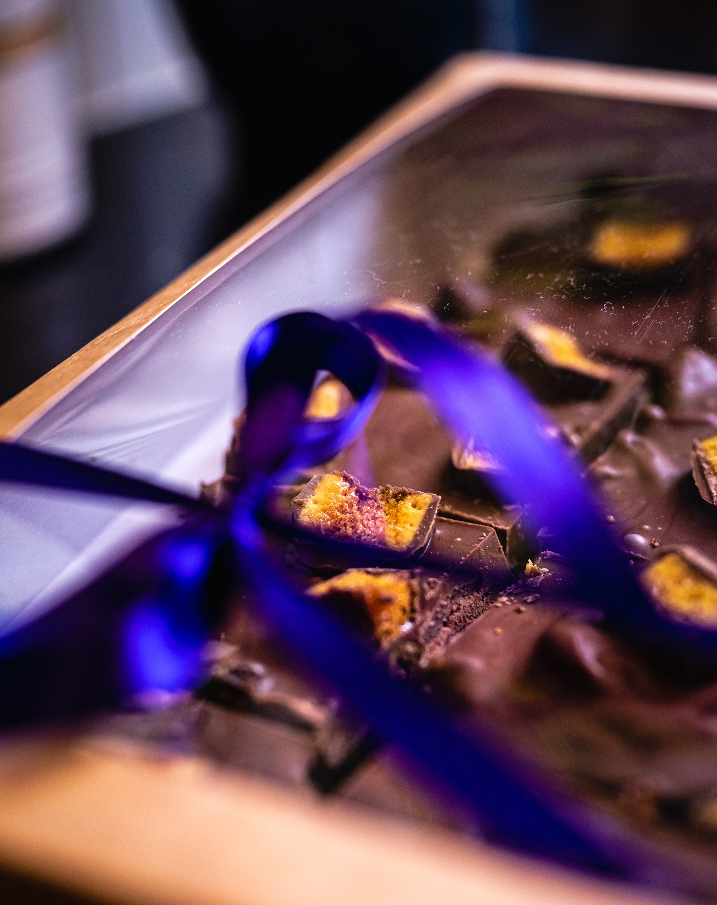
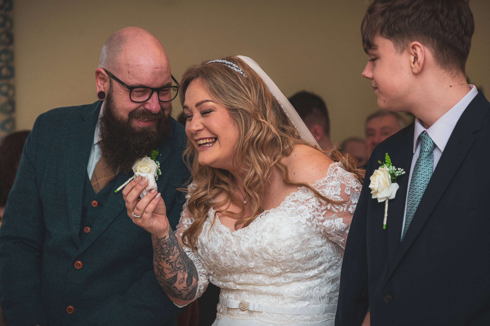
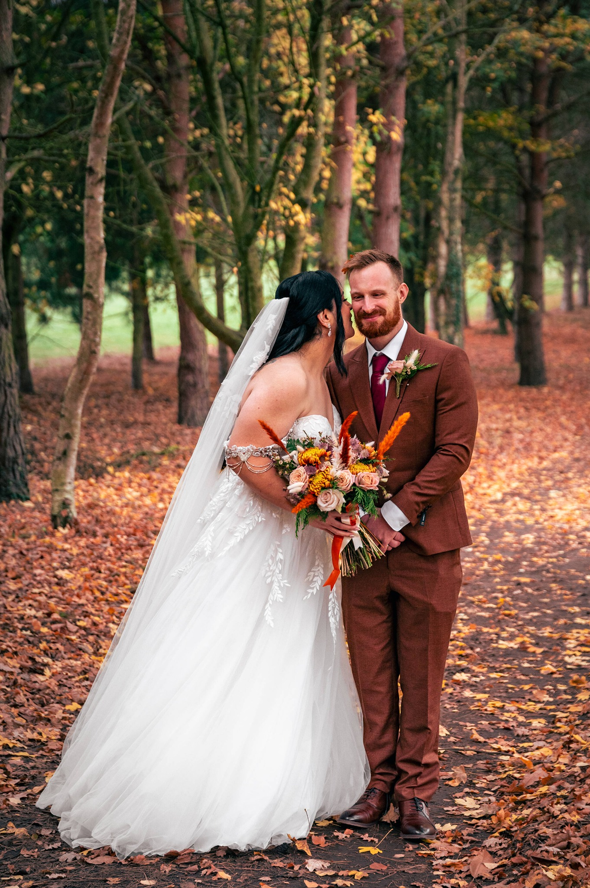
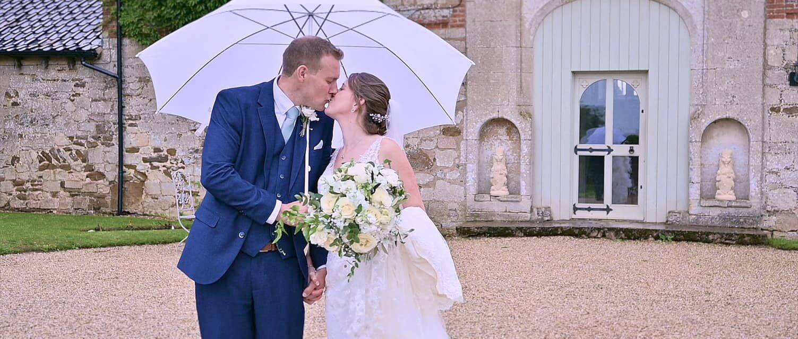
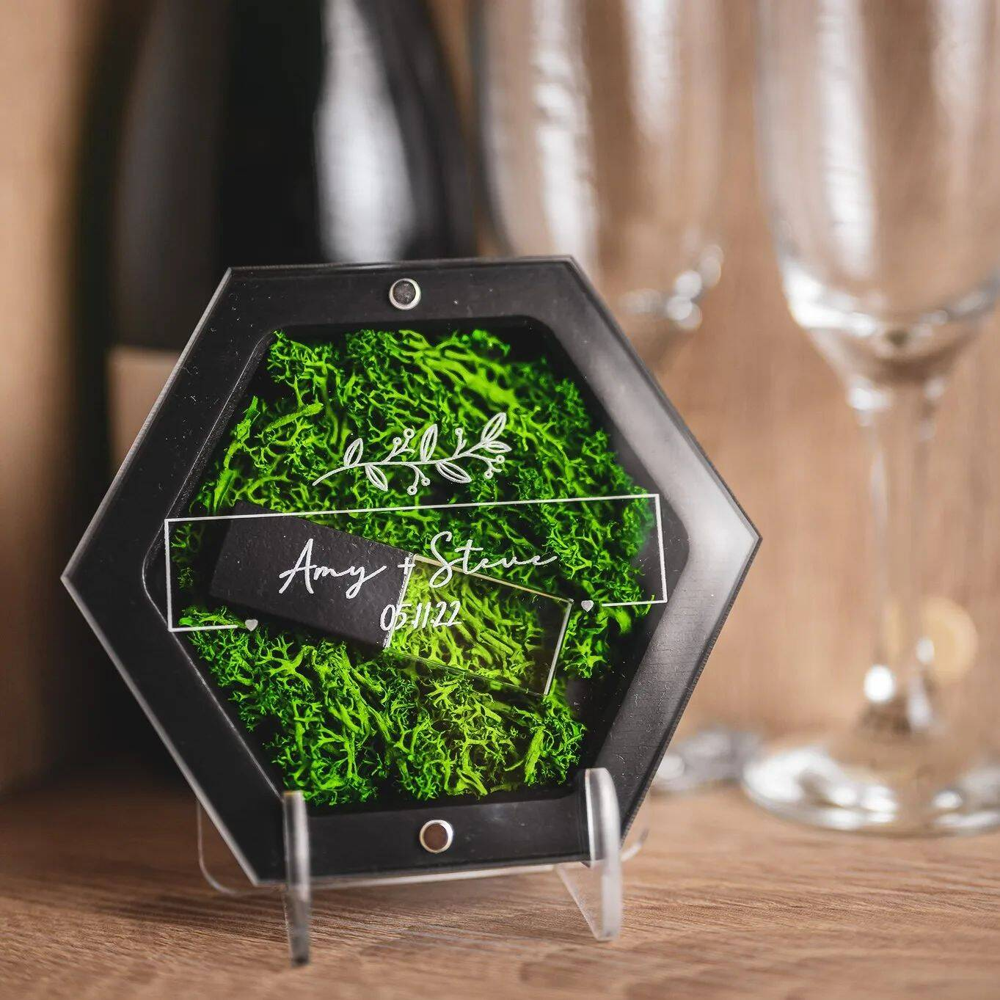
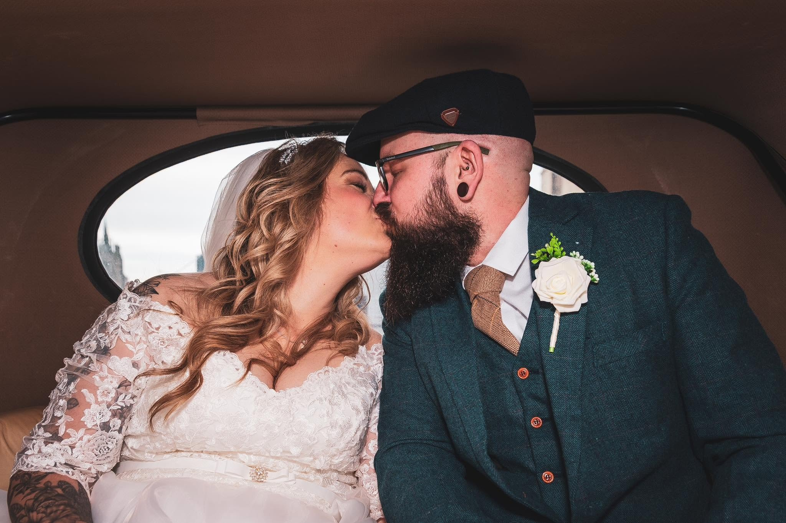

A Norfolk wedding film
One complete wedding story filmed in Norfolk, capturing the atmosphere, movement and genuine moments of the day in Ben’s relaxed, unobtrusive style.
Learn about wedding videography
Real weddings across Norfolk, Suffolk and beyond
A collection of relaxed wedding photography and natural wedding films — full of laughter, quiet glances, happy tears and dance-floor chaos.
A portfolio without the performance
Every wedding looks different because every couple, family and celebration is different. Ben’s job is not to turn your day into a photoshoot or film set — it is to notice what matters and preserve it honestly.
You will find some gently guided portraits here, but also the tiny looks, nervous laughs, proud reactions and wonderfully chaotic moments that happen when nobody is performing for the camera.
Wedding photography
A mix of big emotions, quiet moments and photographs that should still feel like you years from now.













Wedding films
Film holds the voices, movement and atmosphere that make a wedding impossible to recreate — from the build-up to the final dance.
One complete wedding story filmed in Norfolk, capturing the atmosphere, movement and genuine moments of the day in Ben’s relaxed, unobtrusive style.
Learn about wedding videographyA real Norfolk wedding film filled with genuine reactions, natural sound and the story of the day as it unfolded.
View the full-day film packageCan you picture your day here?
Whether you are looking for relaxed wedding photography or a natural wedding film, the first chat is friendly, simple and completely pressure-free.